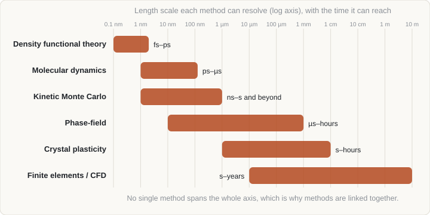

Free · from zero to working knowledge
Learn computational materials science from scratch
No background needed. Start with plain-language pages on numbers, calculus ideas, atoms, energy and your first simulation, then work through a full university-level maths course and refreshers to the methods researchers use: DFT, molecular dynamics, Monte Carlo, CALPHAD, phase-field, finite elements and machine learning. Every page has interactive demos, practice questions with answers, and hover definitions for every new word.

What you get on every page
Each topic is designed to be read once through and kept as a reference.
- ∑
Dense, not shallow
Equations, assumptions, trade-offs and practical advice, followed by primary references you can check.
- ▶
Figures that move
Monte Carlo, spinodal decomposition, molecular dynamics and more, produced from small real simulations rather than drawn by hand.
- ?
Check yourself
Learning goals at the top and worked questions at the end, with answers hidden until you open them.
Where to start
Not sure where you fit? Take the two-minute quiz on the Start here page: it tells you which pages to read first. Or pick the description below that sounds most like you.
How the topics connect
Each topic builds on a few others. Hover or tab through the map to see what a topic needs and what it unlocks; click to open it.
- S0. Start here: what you will learn and how
- S1. Numbers, units and graphs
- S2. Rates of change: calculus from scratch
- S3. Atoms, bonds and materials from scratch
- S4. Forces, energy, heat and motion
- S5. Chance, averages and error bars
- S6. Your first simulation
- M0. Maths course: overview and study plan
- M1. Calculus I: functions of one variable
- M2. Calculus II: several variables and optimisation
- M3. Vector calculus: fields, fluxes and conservation laws
- M4. Linear algebra I: vectors, matrices and lattices
- M5. Linear algebra II: eigenvalues and decompositions
- M6. Tensors: stress, strain and anisotropy
- M7. Ordinary differential equations
- M8. Fourier series and transforms
- M9. Partial differential equations
- M10. Probability and distributions
- M11. Statistics, error analysis and fitting
- M12. Calculus of variations and optimisation
- B1. Mathematics for simulation
- B2. Physics for simulation
- B3. Materials science essentials
- B4. Numerical methods essentials
- B5. Programming and workflow
- 1. Introduction to computational materials science
- 2. Crystal structures, supercells and periodic boundaries
- 3. Statistical mechanics for simulation
- 4. Thermodynamics and CALPHAD
- 5. Density functional theory in practice
- 6. Molecular dynamics
- 7. Monte Carlo and kinetic Monte Carlo
- 8. Diffusion and kinetics
- 9. Phase-field modelling
- 10. The finite element method
- 11. Machine learning for materials
Open the map on its own page →
All topics
Numbered in a sensible reading order. Reading times are approximate.
Start here: no background needed
Plain-language foundations for anyone starting from school-level maths and science. Read these in order.
- S0 Start here: what you will learn and how What computational materials science is, a roadmap with time estimates, how to study, and a short quiz that tells you where to begin.
- S1 Numbers, units and graphs Scientific notation, units and conversions, algebra, functions, logarithms and reading graphs: the everyday maths of science.
- S2 Rates of change: calculus from scratch Slopes, derivatives, areas and the idea of an equation that says how fast something changes, built up with pictures instead of proofs.
- S3 Atoms, bonds and materials from scratch What materials are made of, why atoms stick together, how crystals and defects arise, and how structure sets properties.
- S4 Forces, energy, heat and motion Newton's laws, kinetic and potential energy, springs, why temperature is atomic jiggling, and stress and strain.
- S5 Chance, averages and error bars Probability, means and spread, why more samples shrink the error, the bell curve, and how to be honest about uncertainty.
- S6 Your first simulation Build a simulation from three ingredients, watch diffusion emerge from random walkers, and write the same thing in a few lines of Python.
Maths course: university level, with problems
A full course in the mathematics behind simulation: every concept explained and derived, worked examples, and graded problems with complete solutions. Twelve modules, in order.
- M0 Maths course: overview and study plan How the twelve-module maths course is organised, three learning paths, how to study with the problems, a placement check, a notation guide and a one-page revision sheet.
- M1 Calculus I: functions of one variable Limits, derivatives, integrals and Taylor series, taught properly, with the harmonic approximation, Newton's method and Gaussian integrals as applications.
- M2 Calculus II: several variables and optimisation Partial derivatives, the chain rule, gradients, Hessians, constrained optimisation with Lagrange multipliers, and multiple integrals.
- M3 Vector calculus: fields, fluxes and conservation laws Gradient, divergence, curl and Laplacian, line and surface integrals, the divergence theorem, and how they produce the continuity and diffusion equations.
- M4 Linear algebra I: vectors, matrices and lattices Vectors, linear systems, matrix algebra, determinants, bases and coordinate changes, with crystal lattices as the running example.
- M5 Linear algebra II: eigenvalues and decompositions Eigenvalues, diagonalisation, symmetric matrices, quadratic forms, definiteness, the SVD, and why they give vibrations, stability and principal components.
- M6 Tensors: stress, strain and anisotropy Index notation, tensor transformation, stress and strain, principal values, von Mises stress, Hooke's law and crystal symmetry.
- M7 Ordinary differential equations First-order and linear second-order equations, oscillators, systems and phase planes, stability, stiffness and time-stepping.
- M8 Fourier series and transforms Complex exponentials, Fourier series, the transform, convolution, the discrete transform, and reciprocal space.
- M9 Partial differential equations The diffusion, wave and Laplace equations: classification, boundary conditions, separation of variables, similarity solutions and Fourier methods.
- M10 Probability and distributions Random variables, expectation and variance, the key distributions, the central limit theorem, and the Boltzmann distribution.
- M11 Statistics, error analysis and fitting Estimators, error bars and propagation, correlated samples, least squares, regression, regularisation and model comparison.
- M12 Calculus of variations and optimisation Functionals, the Euler-Lagrange equation, functional derivatives, weak forms, and gradient-based and Newton-type optimisation.
Background: university-level refresher
Maths, physics, materials science, numerical methods and programming as the core topics use them.
- B1 Mathematics for simulation Vector calculus, linear algebra, differential equations, Fourier analysis and statistics: the maths every method relies on.
- B2 Physics for simulation Classical mechanics, electrostatics, quantum mechanics essentials, thermodynamics and the units used in atomistic work.
- B3 Materials science essentials Bonding, structure, defects, phase transformations, mechanical behaviour, processing and the experiments simulations are compared with.
- B4 Numerical methods essentials Floating point, error and stability, root finding and optimisation, linear algebra, integrators, discretisation and parallel scaling.
- B5 Programming and workflow The command line, Python for science, version control, running on clusters, reproducibility and testing your own code.
Core topics
The methods themselves, in a sensible reading order.
- 1 Introduction to computational materials science Scales, method families, multiscale linking, validation, software and data resources.
- 2 Crystal structures, supercells and periodic boundaries Lattices, Miller indices, defects, building simulation cells and periodic boundary conditions.
- 3 Statistical mechanics for simulation Microstates, ensembles, the partition function, free energy, ergodicity and error bars.
- 4 Thermodynamics and CALPHAD Gibbs energy, the common tangent, solution models, phase diagrams and equilibrium calculation.
- 5 Density functional theory in practice The Kohn-Sham scheme, functionals, the SCF cycle, convergence and what to compute.
- 6 Molecular dynamics Integrators, interatomic potentials, thermostats, workflow and analysis.
- 7 Monte Carlo and kinetic Monte Carlo Importance sampling, Metropolis, the Ising model, cluster expansions and rejection-free kinetics.
- 8 Diffusion and kinetics Fick's laws, driving forces, atomistic mechanisms, computing D and solving the equation.
- 9 Phase-field modelling Diffuse interfaces, Allen-Cahn and Cahn-Hilliard, spinodal decomposition and numerics.
- 10 The finite element method Weak form, shape functions, meshing, convergence, nonlinear problems and materials applications.
- 11 Machine learning for materials Data, descriptors, models, honest validation, machine-learned potentials and active learning.
About
MiBeM is written for anyone who studies, makes or tests materials: students, researchers and engineers working with metals, ceramics, polymers, semiconductors or composites. The Start here pages assume only school-level maths and science. The Background level refreshes the university-level mathematics, physics, materials science, numerical methods and programming that the Core topics rely on, so no prior experience with simulation software is assumed.
The animated figures come from small real simulations or computed curves, so what they show is what the method does. Journal details in the reference lists should be checked against the originals before you cite them.